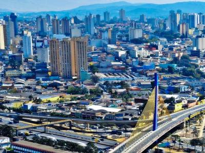
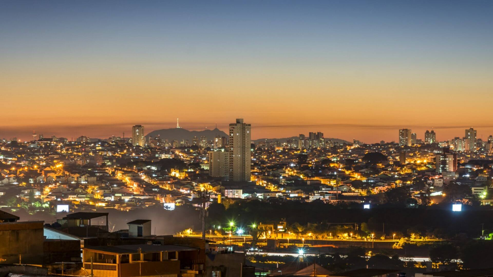

Aeroporto Internacional de Guarulhos: O Aeroporto Internacional de São Paulo-Guarulhos é o maior e mais movimentado aeroporto do Brasil, sendo uma importante porta de entrada para turistas e mercadorias de todo o mundo. Sua infraestrutura moderna e capacidade de operação contribuem significativamente para a economia local e nacional.
Centro Logístico e Industrial: Guarulhos é um importante centro logístico e industrial, abrigando uma variedade de empresas dos setores de logística, transporte, tecnologia, automobilístico, eletroeletrônico, entre outros. A cidade possui uma localização estratégica próxima à capital paulista e a importantes rodovias e ferrovias, o que a torna um polo atrativo para investimentos empresariais.
Parques e Áreas Verdes: Apesar de ser uma cidade majoritariamente urbanizada, Guarulhos preserva algumas áreas verdes e parques que oferecem espaços de lazer e contato com a natureza para seus moradores. O Bosque Maia, por exemplo, é um dos maiores parques urbanos da cidade e um importante local de recreação e convívio social.
Diversidade Cultural: A população de Guarulhos é marcada por uma grande diversidade cultural, com a presença de diferentes etnias e nacionalidades. Essa diversidade se reflete na culinária, nas festas populares, nas manifestações artísticas e nas tradições da cidade, enriquecendo sua identidade cultural.
Educação e Ensino Superior: Guarulhos conta com diversas instituições de ensino superior, como universidades, faculdades e centros de pesquisa, que contribuem para a formação acadêmica e profissional de seus habitantes. A Universidade de Guarulhos (UNG) e a Universidade Federal de São Paulo (UNIFESP) são exemplos de instituições renomadas na cidade.
Crescimento Econômico: O crescimento econômico de Guarulhos tem sido impulsionado pelo desenvolvimento de diversos setores, como comércio, serviços e indústria. A cidade é um importante polo comercial, com shoppings, centros empresariais e áreas de comércio que contribuem para a geração de empregos e o aumento da renda da população.
Inovação e Tecnologia: Guarulhos tem se destacado como um centro de inovação e tecnologia, com a instalação de empresas e startups voltadas para o desenvolvimento de novas soluções e tecnologias. Incubadoras e centros de pesquisa promovem o empreendedorismo e impulsionam a economia local.
Infraestrutura Urbana: A cidade possui uma infraestrutura urbana desenvolvida, com amplas vias de acesso, transporte público eficiente e serviços básicos de qualidade. Isso contribui para o bem-estar e a qualidade de vida de seus moradores, além de atrair novos investimentos e empreendimentos para a região.
Patrimônio Histórico e Cultural: Guarulhos possui um rico patrimônio histórico e cultural, com construções antigas, igrejas centenárias e espaços culturais que contam a história da cidade e de seus habitantes. O Museu Histórico Municipal de Guarulhos é um importante espaço de preservação e difusão da memória local.
Potencial Turístico: Apesar de seu perfil predominantemente industrial e comercial, Guarulhos possui um potencial turístico a ser explorado, especialmente por meio de seus eventos culturais, festas populares e pontos turísticos. A cidade também está próxima a importantes destinos turísticos do estado de São Paulo, como a Serra da Cantareira e o Parque Estadual da Cantareira, o que contribui para o desenvolvimento do turismo na região.
